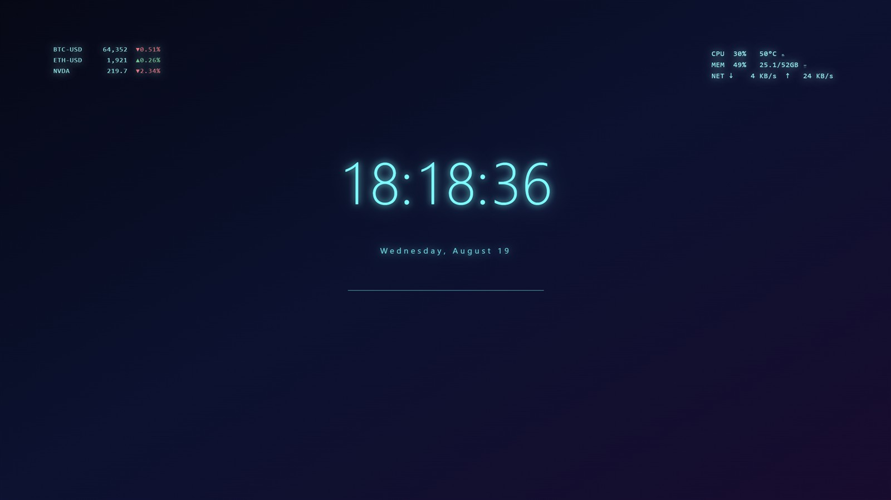
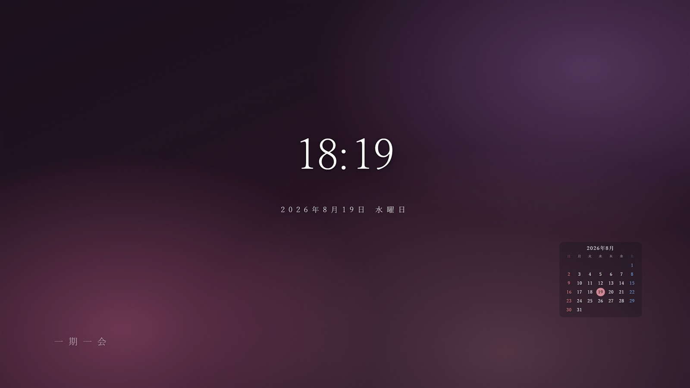
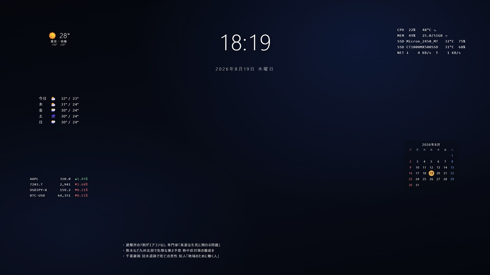

Themes
選ぶだけで、
できあがっている。
6 つのテーマを同梱しています。初回起動のウィザードで選ぶか、設定の「テーマ」タブからいつでも。 適用すると、それまでの構成は「適用前の構成 (自動)」として保存されるので、気に入らなければ元に戻せます。
01Minimal
ミニマル
時計と日付だけ。壁紙の写真を邪魔したくない人へ。静かなモノトーンで、余白がいちばんの要素です。
02Cyber
サイバー
ネオン発光の時計と、CPU / GPU の温度が並ぶモニタ類。ゲーミングデスクに置いたときにいちばん映えるテーマです。

03Zen
和
明朝体と桜色。数字を大きく見せるのではなく、余白と字面で見せる設え。落ち着いた作業机に。

04Dashboard
情報ダッシュボード
天気・週間予報・PC の状態・ニュース・株価を一望する、いちばん情報量の多いテーマ。ブラウザを開く回数がいちばん減ります。

05Focus
フォーカス
ポモドーロタイマーと ToDo リストだけを置いた、作業のためのテーマ。デスクトップに戻るたび、残り時間と次にやることが目に入ります。
06Music
ミュージック
再生中の曲のジャケットをぼかして壁紙にし、その色をアクセントに反映。再生操作とビジュアライザーが並びます。曲が変わると、壁紙の色も変わります。
選んだあとは、好きに崩していい。
テーマはあくまで出発点です。要らないウィジェットは消して、足りないものを足してください。